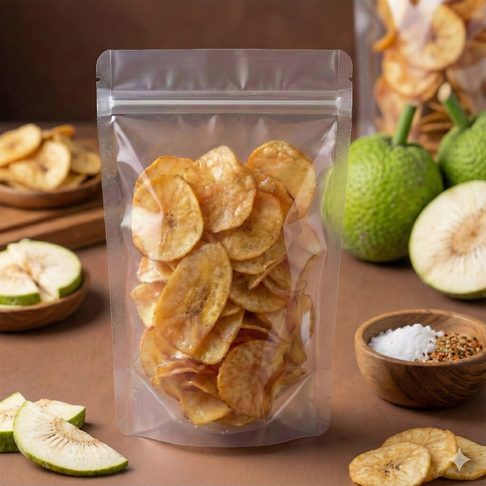
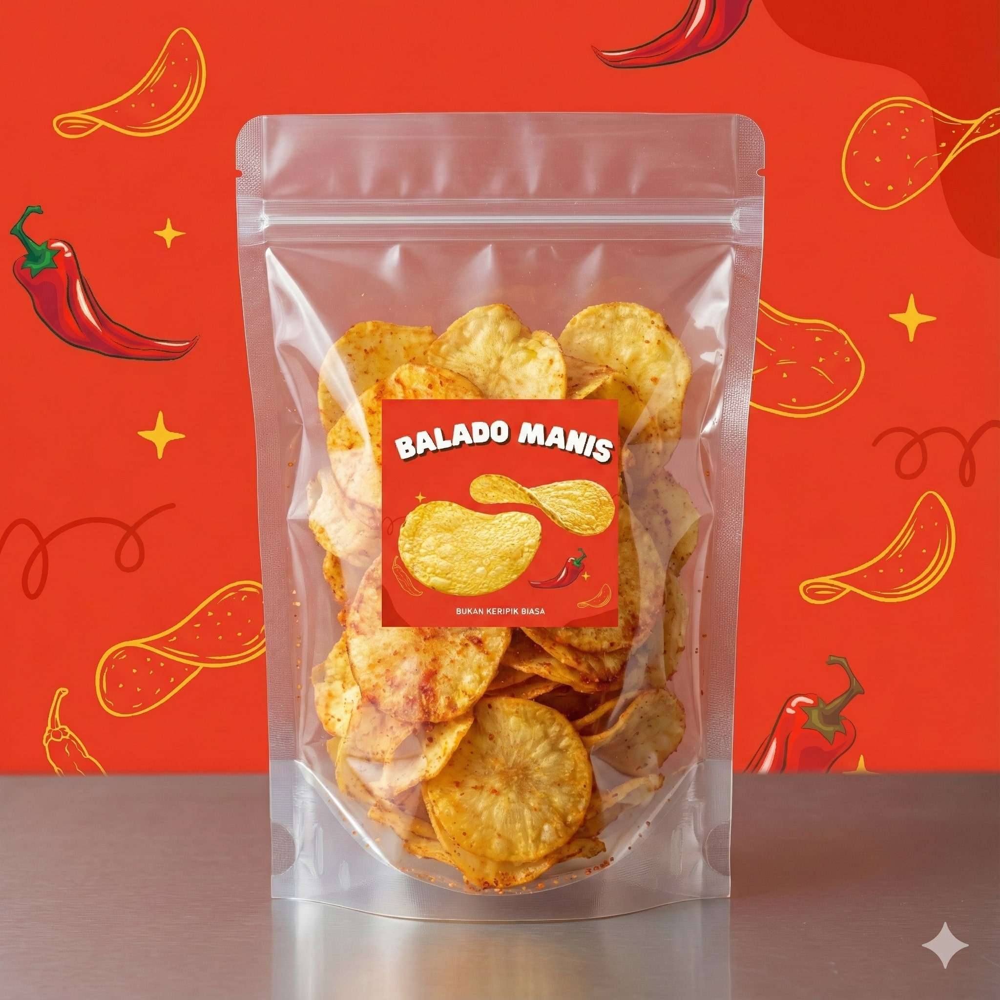

Best seller
● ● ●Camilan lokal Tebing Tinggi
Renyahnya lokal,
rasanya total.
Keripik pilihan dengan bumbu berani dan glaze kekinian. Dibuat untuk nemenin kerja, nongkrong, sampai jadi oleh-oleh.
8+ pilihan rasa100% bahan lokal0 pengawet

PRIDE!#BukanKeripikBiasa
RENYAH POLL✦RASA KEKINIAN✦BAHAN LOKAL✦✦✦✦
Temukan favoritmu
Satu gigitan,
banyak cerita.
Dari gurih klasik sampai manis creamy, semuanya punya karakter. Klik foto untuk melihat lebih dekat.
Smoky
Jagung Bakar
Creamy
Glaze Tiramisu
Earthy
Glaze Matcha
Sweet
Glaze Coklat
Klasik
Keripik Pisang
Kenapa KRIFIKS?
Beda dari
bungkus pertama.
Kami serius soal rasa, bahan, dan pengalaman ngemil yang nggak ngebosenin.
Bahan lokal terpilih
Bersumber dari petani lokal Tebing Tinggi dan dipilih untuk hasil terbaik.
Rasa yang berani
Bumbu melimpah dan varian glaze unik yang bikin susah berhenti.
Renyah & higienis
Diproses dengan cermat, tanpa pengawet, lalu dikemas rapat agar tetap renyah.


DariTebing Tinggi
Cerita di balik rasa
Lokal itu
punya banyak rasa.
KRIFIKS lahir dari keinginan sederhana: membawa bahan pangan lokal naik kelas tanpa kehilangan rasa akrabnya.
Kami memadukan keripik yang familiar dengan rasa-rasa baru—supaya produk lokal bukan cuma jadi pilihan, tapi jadi kebanggaan.
“Bukan sekadar ngemil. Ini cara asik menikmati hasil bumi lokal.”
Kamu tanya, kami jawab
Yang sering
ditanyain.
Belum ketemu jawabannya? Langsung chat kami lewat WhatsApp.
Apakah produk KRIFIKS halal?+
Semua bahan yang kami gunakan halal dan diproses secara higienis tanpa bahan non-halal.
Berapa lama keripik bisa tahan?+
Dalam kemasan yang belum dibuka, produk dapat bertahan sekitar 3–4 bulan. Setelah dibuka, tutup ziplock rapat dan habiskan dalam satu minggu untuk kerenyahan terbaik.
Bisa dikirim ke luar kota?+
Bisa. Kami melayani pengiriman ke seluruh Indonesia dengan kemasan pelindung agar produk sampai dengan aman.
Bisa pesan untuk hampers atau acara?+
Bisa banget. Hubungi kami untuk pilihan paket, jumlah pesanan, dan waktu pengerjaan yang sesuai kebutuhanmu.
Siap cobain?
Stok camilanmu
jangan sampai kosong.
Pilih rasa favorit, chat kami, lalu tunggu renyahnya sampai di depan pintu.
Chat WhatsApp